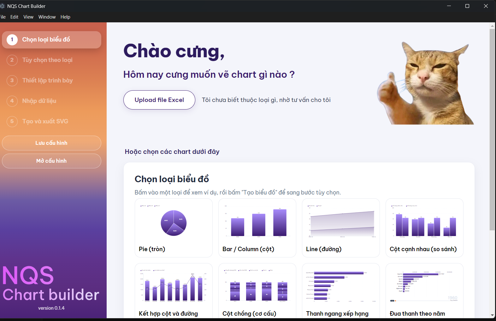
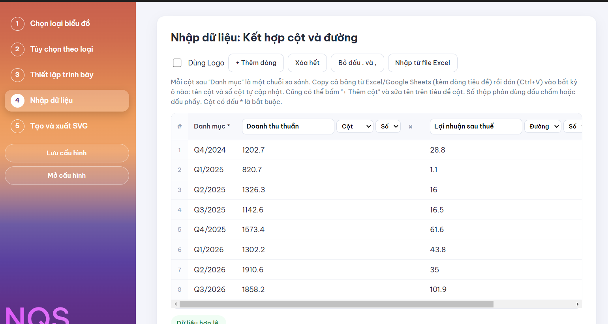
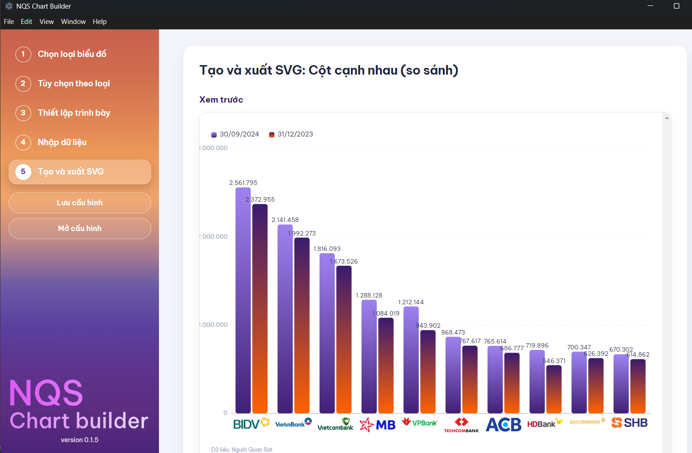
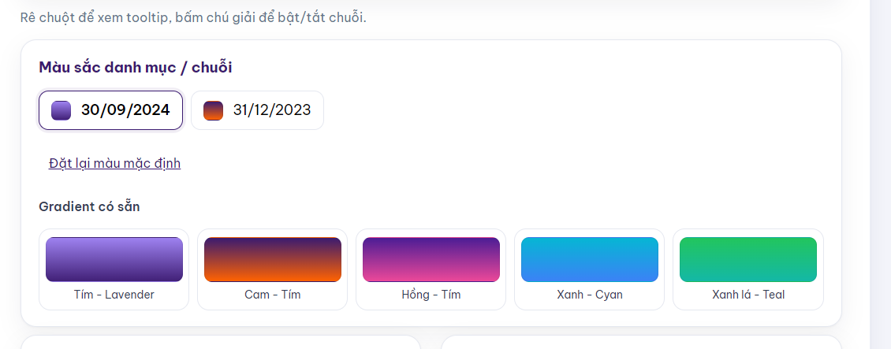
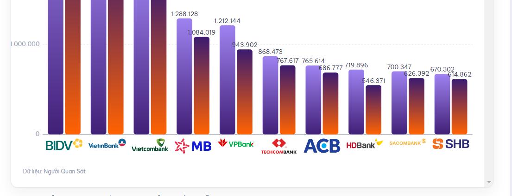

NQS-Chart-Builder-Setup-x.x.x.exe của bản mới nhất.Mỗi lần mở, app tự kiểm tra bản mới. Khi có, một hộp thoại hiện ra: chọn Khởi động lại và cập nhật để dùng bản mới ngay, hoặc Để sau (bản mới sẽ tự cài khi bạn thoát app). Cần có mạng để kiểm tra. Số phiên bản hiện ở góc dưới menu bên trái.
Gợi ý loại biểu đồ, nhận diện bảng Excel và ghép tên logo dùng AI Gemini, cần có Internet. Nếu AI không dùng được (mất mạng, hết hạn mức), app tự chuyển sang quy tắc đơn giản và vẫn làm việc được.
Menu bên trái luôn hiển thị 5 bước; bạn có thể bấm vào từng bước để quay lại sửa. Hai nút Lưu cấu hình và Mở cấu hình ở dưới menu giúp lưu lại công việc đang làm (xem mục 8).

Cách nhanh: bấm Upload file Excel, chọn file dữ liệu .xlsx. AI đọc bảng và gợi ý tối đa 3 loại biểu đồ phù hợp kèm lý do. Rê chuột vào dòng gợi ý, bấm Tạo ngay để chọn luôn loại đó và sang bước 2.
Cách thủ công: bấm vào một loại ở danh sách bên dưới để xem ví dụ, rồi bấm nút tạo biểu đồ.
| Loại biểu đồ | Dùng khi nào | Cấu trúc bảng dữ liệu |
|---|---|---|
| Pie (tròn) | Cơ cấu, tỷ trọng của một tổng. | Danh mục, Giá trị |
| Bar / Column (cột) | So sánh một chỉ số giữa các danh mục. Chọn được cột dọc hoặc ngang. | Danh mục, Giá trị |
| Line (đường) | Diễn biến theo thời gian của một hay nhiều chuỗi. | Trục X, Tên chuỗi, Giá trị |
| Cột cạnh nhau (so sánh) | So sánh nhiều chuỗi (ví dụ hai kỳ) trên cùng danh mục. Chọn được chiều dọc hoặc ngang. | Danh mục + nhiều cột chuỗi |
| Kết hợp cột và đường | Hai chỉ số khác đơn vị hoặc quy mô (ví dụ doanh thu và lợi nhuận). | Danh mục + nhiều chuỗi, mỗi chuỗi là Cột hoặc Đường |
| Cột chồng (cơ cấu) | Cơ cấu thành phần theo từng mốc; có chế độ 100%. | Danh mục + nhiều chuỗi |
| Thanh ngang xếp hạng | Bảng xếp hạng, tự sắp xếp từ cao xuống thấp. | Danh mục, Giá trị |
| Đua thanh theo năm | Thứ hạng thay đổi theo thời gian, có nút Chạy/Dừng và thanh trượt. | Danh mục + mỗi cột là một năm |
| Đường xếp hạng theo năm | Theo dõi thứ hạng hoặc giá trị của từng đối tượng qua các năm. | Danh mục + mỗi cột là một năm |
Các tùy chọn thay đổi theo từng loại biểu đồ. Những mục hay dùng:
| Mục | Cách dùng |
|---|---|
| Tiêu đề, Phụ đề | Hiện ở đầu biểu đồ. Khung "Xem trước tiêu đề" cho thấy kết quả ngay. |
| Mô tả / nguồn | Mặc định là Dữ liệu: Người Quan Sát. Bạn sửa tùy ý, hoặc xóa trống để biểu đồ không có dòng nguồn. |
| Kích thước | Chọn tỷ lệ khung hình có sẵn hoặc Tùy chỉnh chiều rộng, chiều cao (300 đến 3000 px). |
| Hiển thị | Hiện trục tọa độ, hiện đường lưới. |
| Tương tác | Bật/tắt tooltip, chú giải bật tắt chuỗi, zoom (cho biểu đồ đường). |

.xlsx. AI tự xác định dòng tiêu đề, cột danh mục, cột giá trị, bỏ qua dòng tiêu đề báo cáo, dòng "Đơn vị" và dòng nguồn ở cuối. Dòng ghi chú của AI hiện bên dưới bảng, hãy đọc để kiểm tra.2.561.795), bấm Bỏ dấu . và , để xóa dấu ở các cột số (thao tác không hoàn tác được).| Ô chọn | Tác dụng |
|---|---|
| Cột / Đường | Có ở Cột cạnh nhau, Cột chồng và Kết hợp. Chuỗi chọn "Đường" được vẽ thành đường và dùng trục phải. |
| Số / % | Có ở Kết hợp, Đua thanh, Đường xếp hạng. Chọn "%" thì nhãn có dấu %. Giá trị nhỏ hơn hoặc bằng 1 trong cột % được hiểu là tỷ lệ và nhân 100 (0,1263 thành 12,6%). |
| Sửa tên chuỗi | Gõ trực tiếp trên tiêu đề cột. Đổi tên không làm mất dữ liệu. |
| + Thêm cột / × | Thêm hoặc xóa một chuỗi. |
Tick Dùng Logo để thay tên danh mục bằng logo (ví dụ tên ngân hàng, công ty chứng khoán). App khớp tên danh mục với thư viện logo có sẵn; tên gần đúng thì AI ghép giúp. Thanh thông báo cho biết đã gán được bao nhiêu danh mục và liệt kê danh mục chưa có logo (những danh mục đó vẫn hiện bằng chữ).
Logo được đóng gói sẵn trong app, bạn không phải chọn thư mục. Hiện thư viện có 24 logo. Tên file chính là tên danh mục, không phân biệt dấu, hoa thường, dấu cách hay gạch nối: file Mirae Asset.png khớp với danh mục "Mirae Asset" hoặc "MiraeAsset".
| Nhóm | Tên logo hiện có |
|---|---|
| Ngân hàng Tên thường gọi, không thêm hậu tố | BIDVVietinBankVietcombankMBVPBankTechcombankHDBankACBSacombankSHB |
| Chứng khoán thuộc ngân hàng Dùng tên riêng của công ty | TCBS (Techcombank)VPBankS (VPBank)MBS (MB)ACBS (ACB)VCBS (Vietcombank) |
| Chứng khoán độc lập | SSIVPSVNDirectHSCVietcapMirae AssetLPSVIXDNSE |
Gửi file logo cho người phụ trách app. Logo được đặt vào thư mục logos với đúng quy cách tên ở trên (nền trong suốt, dưới 1 MB, đuôi png/jpg/webp/svg) rồi phát hành bản mới. Người dùng sẽ có logo mới sau khi app tự cập nhật.

#412077 dưới, #9E82F0 trên) là màu chính của NQS. Khi có nhiều chuỗi, các chuỗi sau lần lượt dùng gradient Cam - Tím, Xanh - Cyan, Hồng - Tím, Xanh lá - Teal.
| Mục | Ghi chú |
|---|---|
| Tiêu đề, nhãn trục và số liệu bên ngoài | Màu chữ chung cho tiêu đề, tên trục, số ngoài cột. |
| Số liệu bên trong cột/khúc | Mặc định tự chọn trắng hoặc đen theo màu nền. |
| Số liệu trên đường (Line, Kết hợp) | Mặc định trắng khi nhãn nằm trong cột, nằm ngoài cột thì dùng màu chữ thường để không bị mất. |
| Cỡ chữ | Ba ô: Tiêu đề (mặc định 26), Nhãn trục (14), Số liệu (15). |
Nhãn trục dài tự xoay nghiêng; chú giải tự xuống dòng khi hết chỗ; số trên trục tự chừa lề đủ rộng để không bị cắt.
top-10-ngan-hang).tuan.https://nqs.1cdn.vn/năm/tháng/ngày/tên-file.svg.<object type="image/svg+xml" data="…"></object>img chặn mã chạy trong SVG nên mất tooltip và các tương tác. Cần nhúng bằng mã nhúng app đã tạo.
.json.| Hiện tượng | Cách xử lý |
|---|---|
Upload/Nhập Excel báo lỗi, ví dụ reading 'sheets' | Mở file trong Excel, Save As thành Excel Workbook (.xlsx), rồi thử lại. |
| AI báo không dùng được, hoặc lỗi Gemini | Kiểm tra mạng. Nếu vẫn lỗi có thể hết hạn mức; báo người phụ trách. App vẫn nhập được bảng theo quy tắc đơn giản. |
| Tick Dùng Logo nhưng không ra logo | Kiểm tra tên danh mục có khớp tên logo (mục 6). Danh mục chưa có logo sẽ hiện bằng chữ. |
| Không bấm được "Tiếp tục" ở bước 4 | Đọc hộp thông báo dưới bảng: còn lỗi màu đỏ (thiếu danh mục, thiếu tên chuỗi, giá trị không phải số). |
| Số bị lệch hoặc dư dấu chấm | Bấm Bỏ dấu . và , ở bước 4. Kiểm tra lại số thập phân dùng dấu nào. |
| Biểu đồ nhúng vào bài mất tooltip | Dùng đúng mã nhúng <object> mà app tạo, không dùng thẻ img. |
| Cửa sổ "Installing" hiện mỗi lần mở | Bạn đang mở file Setup. Mở app bằng biểu tượng Desktop hoặc menu Start. |
| Không thấy hộp thoại cập nhật | Tắt hẳn app (kiểm tra cả Task Manager), mở lại và chờ khoảng một phút. Cần có mạng. |
Khi báo lỗi, hãy gửi kèm ảnh chụp màn hình và file Excel mẫu để dễ tìm nguyên nhân.
Thư mục mã nguồn: D:\chart-builder\chart-builder. Kho phát hành: github.com/Blan1998/nqs-chart-builder (Public, chỉ chứa Release, không đẩy mã nguồn lên).
npm run dev nếu đang chạy, rồi chạy npm run dist. Số phiên bản tự tăng.out\ lấy 3 file: NQS-Chart-Builder-Setup-x.x.x.exe, ….exe.blockmap và latest.yml.v0.1.7), kéo cả 3 file vào, đợi tải xong rồi bấm Publish release.ai-key.txt. Vì Release là công khai, ai tải về cũng có thể trích được key. Nên dùng key riêng có đặt hạn mức chi tiêu, và đổi key nếu nghi bị lộ.logos\ theo quy cách tên trong mục 6 (xem thêm logos\README.txt) rồi phát hành bản mới: logo chỉ có hiệu lực sau khi đóng gói lại.